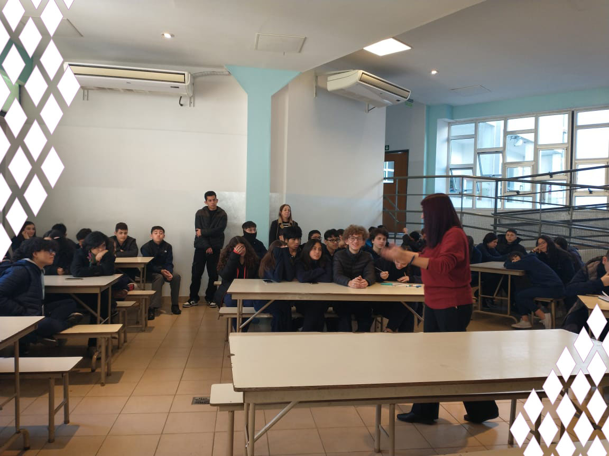

Para empezar la charla la especialista habló sobre cómo funcionan las redes. En este tema explicó varios puntos, a continuación se mencionan: Todo lo que se publica se queda en internet para siempre. Este punto quiere decir que aun así uno borre una publicación o mensaje enviado estos quedarán para siempre en los archivos de la empresa dueña de la aplicación usada. No pagamos las aplicaciones con dinero sino con información personal. No hay forma de cambiar nuestra identidad digital. Esta se conforma por los “rastros” que dejamos y que nunca se borran. Una vez que “creamos” nuestra identidad digital y la usamos no se puede borrar o no se puede cambiar. Nada de lo que se publica es privado, siempre puede haber alguien que lo vea y lo reenvie a alguien más. A su vez ese más puede enviarlo a otro y así sucesivamente generando un efecto dominó en el que todo el mundo al final sabe sobre tu publicación “ privada” de otro. El bullying no solo sucede en ámbitos escolares, también puede suceder en otros ambientes como es el ejemplo el que se realice a través de una red social. En este caso recibe el nombre de ciberbullying. Si bien está mal esto es algo que pasa, y para frenarlo la especialista comentó que desde el lado de la víctima es importante pedir ayuda o realizar una denuncia llegado el caso. También cabe aclarar que siendo un agente que observa en estos casos es recomendable ayudar a la víctima o pedir ayuda a alguien externo para que ayude a frenar esta situación. Sexting Es el intercambio voluntario de imágenes, videos y conversaciones de carácter sexual y/o erótico. Esto, aún siendo voluntario, tiene sus riesgos. Algunos de ellos son: Daños a la imagen personal. Ya que a quien enviamos la foto o video puede compartirla y dañar nuestra imagen pública. Pérdida de intimidad ya que esa imagen o video muestra nuestra intimidad y el que alguien la tenga hace que nuestra intimidad ya no sea tan íntima. Acoso o ciberacoso. Esa persona a quien se le envía la imagen puede empezar a pedir más y más. Esto es considerado un delito de acoso ya que corrompe la privacidad de la víctima. Potencial incursión en delito de pornografia infantil. Es más que obvio que tener una foto de un menor en la que se muestra su intimidad es ilegal en gran parte del mundo. Como a veces son menores los que realizan el sexting aquel quien recibe la foto puede ser acusado y se le puede realizar un juicio jurídico. Por no decir que esta situación es mala en sí, en caso de la persona que posee la foto decide compartirla el delito se agrava por distribución. Grooming El grooming es cuando una persona se hace pasar por otra. En la mayoría de casos la víctima es un menor y el agresor es un mayor, aunque puede ser al revés o entre pares. Para evitar esto, explica la agente Fernandéz, “es importante saber tres cosas sobre el titular de la cuenta. Saber quien es y saber que es una persona física. Que esa persona o alguien cercano te diga que esa cuenta efectivamente es de esa persona y no alguien que se hace pasar por esa persona. Saber cómo ubicar a esa persona”. En el grooming el agresor o delincuente puede solicitar varias cosas. Fotos privadas e/o indevidas. Encuentros. Información personal. Si sabes que te están queriendo estafar debes no acceder a realizar o pasar estas cosas. El grooming se conforma de etapas o pasos que sigue el agresor las cuales son: Establecer lazos de amistad. Obtener información de la víctima. “Seducir” y obtener información comprometedora para la víctima. Extorsión para generar más material y/o un encuentro. En caso de ser víctima Ya explicamos qué hacer en caso de ser víctima de bullying, ¿pero si somos víctimas de sexting o de grooming? En este caso si somos víctimas de sexting no hay mucho que se pueda realizar si no se incluyen menores en el asunto, ya que es algo que se hace por voluntad propia. Si hay menores involucrados se pueden realizar juicios a ambas partes que pueden terminar en multas o sentencias. Pero hay otro caso que es el de que pasa si alguien nos obliga a pasarle este tipo de contenido como sucede en el grooming. Alguien nos manipula para que le enviemos este tipo de contenido. Si este es el caso los pasos a seguir son: Avisar a algún adulto que pueda realizar una denuncia o realizar la denuncia uno mismo. No dejar de hablar con el delincuente. Si el delincuente se da cuenta que algo raro pasa desaparecerá y será más difícil encontrarlo y prevenir que afecte a más personas. No coordinar o atender a ningún encuentro. No borrar ninguna parte de la información. Aunque a veces puede ser vergonzoso esto solo dificultará la investigación policial y en algunos casos puede hasta ser un delito. Identificar al emisor del mensaje con el URL del perfil (en el perfil, los tres puntitos, copiar link) o con el número que utilizó para comunicarse. Esperamos encuentres este artículo de utilidad y ahora te puedas prevenir mejor de esta clase de delitos Prevención de delitos tecnológicos El día jueves 16 de mayo de 2024 la especialista Dora Fernandéz del cuerpo de la policía de la ciudad de Buenos Aires en delitos cibernéticos dio una charla en nuestra institución, el CEAES. Para empezar la charla la especialista habló sobre cómo funcionan las redes. En este tema explicó varios puntos, a continuación se mencionan: Todo lo que se publica se queda en internet para siempre. Este punto quiere decir que aun así uno borre una publicación o mensaje enviado estos quedarán para siempre en los archivos de la empresa dueña de la aplicación usada. No pagamos las aplicaciones con dinero sino con información personal. No hay forma de cambiar nuestra identidad digital. Esta se conforma por los “rastros” que dejamos y que nunca se borran. Una vez que “creamos” nuestra identidad digital y la usamos no se puede borrar o no se puede cambiar. Nada de lo que se publica es privado, siempre puede haber alguien que lo vea y lo reenvie a alguien más. A su vez ese más puede enviarlo a otro y así sucesivamente generando un efecto dominó en el que todo el mundo al final sabe sobre tu publicación “privada”. Bullying A continuación Dora habló sobre el bullying. Explico las partes necesarias para que haya una situación de bullying: Una o varias víctimas uno o varios hostigadores cómplices. El bullying no solo sucede en ámbitos escolares, también puede suceder en otros ambientes como es el ejemplo el que se realiza a través de una red social. En este caso recibe el nombre de ciberbullying. Si bien está mal esto es algo que pasa, y para frenarlo la especialista comentó que desde el lado de la víctima es importante pedir ayuda o realizar una denuncia llegado el caso. También cabe aclarar que siendo un agente que observa en estos casos es recomendable ayudar a la víctima o pedir ayuda a alguien externo para que ayude a frenar esta situación. Sexting Es el intercambio voluntario de imágenes, videos y conversaciones de carácter sexual y/o erótico. Esto, aún siendo voluntario, tiene sus riesgos. Algunos de ellos son: Daños a la imagen personal. Ya que a quien enviamos la foto o video puede compartirla y dañar nuestra imagen pública. Pérdida de intimidad ya que esa imagen o video muestra nuestra intimidad y el que alguien la tenga hace que nuestra intimidad ya no sea tan íntima. Chantaje o extorsión. Si esas imágenes llegan a las manos equivocadas podemos encontrarnos con gente que las posea y que pida dinero o otro tipo de cosas para no divulgarlas. Acoso o ciberacoso. Esa persona a quien se le envía la imagen puede empezar a pedir más y más. Esto es considerado un delito de acoso ya que corrompe la privacidad de la víctima. Potencial incursión en delito de pornografia infantil. Es más que obvio que tener una foto de un menor en la que se muestra su intimidad es ilegal en gran parte del mundo. Como a veces son menores los que realizan el sexting aquel quien recibe la foto puede ser acusado y se le puede realizar un juicio jurídico. Por no decir que esta situación es mala en sí, en caso de la persona que posee la foto decide compartirla el delito se agrava por distribución. Grooming El grooming es cuando una persona se hace pasar por otra. En la mayoría de casos la víctima es un menor y el agresor es un mayor, aunque puede ser al revés o entre pares. Para evitar esto, explica la agente Fernandéz, “es importante saber tres cosas sobre el titular de la cuenta. Saber quien es y saber que es una persona física. Que esa persona o alguien cercano te diga que esa cuenta efectivamente es de esa persona y no alguien que se hace pasar por esa persona. Saber cómo ubicar a esa persona”. En el grooming el agresor o delincuente puede solicitar varias cosas. Fotos privadas y/o indebidas. Encuentros. Información personal. Si sabes que te están queriendo estafar debes no acceder a realizar o pasar estas cosas. El grooming se conforma de etapas o pasos que sigue el agresor las cuales son: Establecer lazos de amistad. Obtener información de la víctima. “Seducir” y obtener información comprometedora para la víctima. Extorsión para generar más material y/o un encuentro. En caso de ser víctima Ya explicamos qué hacer en caso de ser víctima de bullying, ¿pero si somos víctimas de sexting o de grooming? En este caso si somos víctimas de sexting no hay mucho que se pueda realizar si no se incluyen menores en el asunto, ya que es algo que se hace por voluntad propia. Si hay menores involucrados se pueden realizar juicios a ambas partes que pueden terminar en multas o sentencias. Pero hay otro caso que es el de que pasa si alguien nos obliga a pasarle este tipo de contenido como sucede en el grooming. Alguien nos manipula para que le enviemos este tipo de contenido. Si este es el caso los pasos a seguir son: Avisar a algún adulto que pueda realizar una denuncia o realizar la denuncia uno mismo. No dejar de hablar con el delincuente. Si el delincuente se da cuenta que algo raro pasa desaparecerá y será más difícil encontrarlo y prevenir que afecte a más personas. No coordinar o asistir a ningún encuentro. No borrar ninguna parte de la información. Aunque a veces puede ser vergonzoso esto solo dificultará la investigación policial y en algunos casos puede hasta ser un delito. Identificar al emisor del mensaje con el URL del perfil (en el perfil, los tres puntitos, copiar link) o con el número que utilizó para comunicarse.
